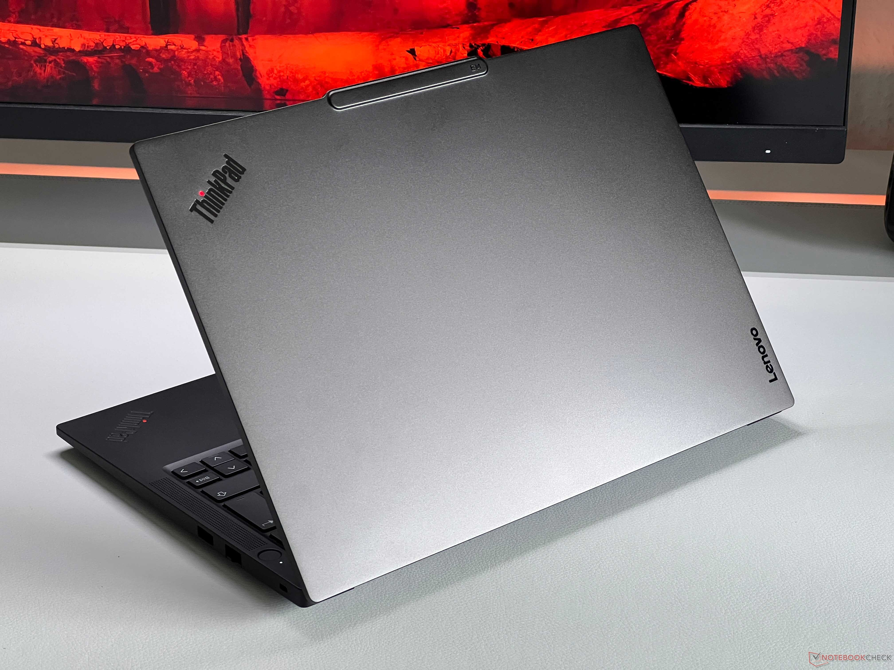
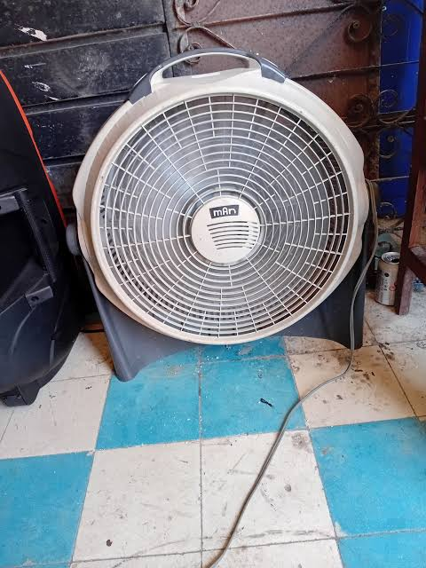
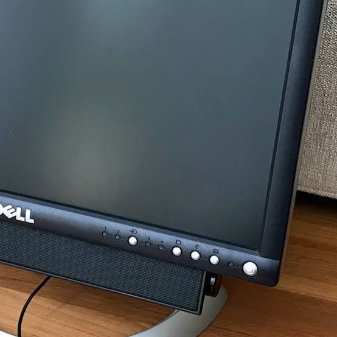

Imagen aquíLaptop Lenovo ThinkPad
M
María R.
MÓDULO 02 / INTERCAMBIO
Explora equipos que buscan una segunda oportunidad en Piura.
PUBLICACIONES DE LA COMUNIDAD

Imagen aquí
Imagen aquí
Imagen aquíNo encontramos equipos con esos filtros. Prueba con otra búsqueda.